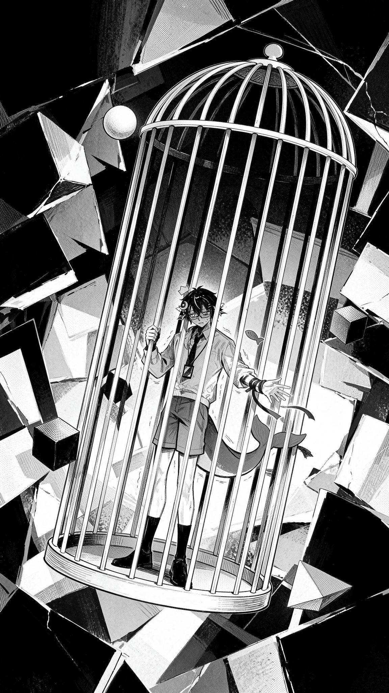
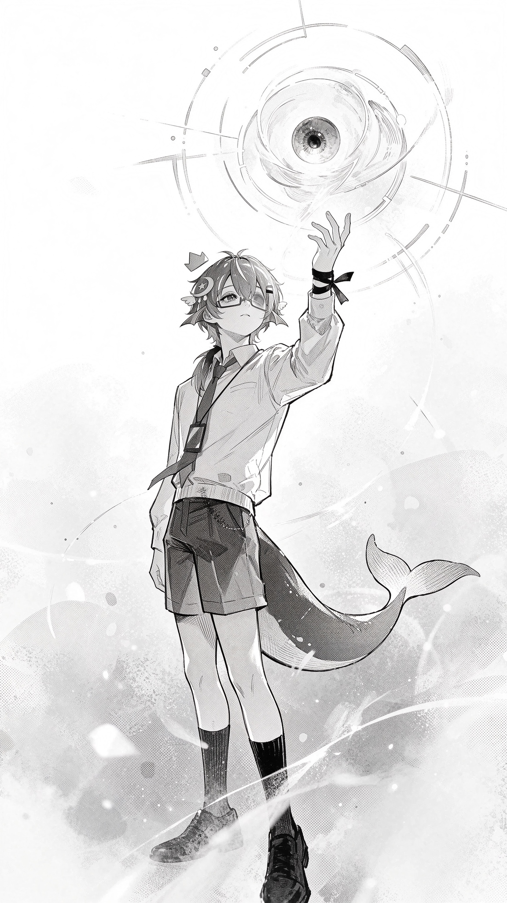
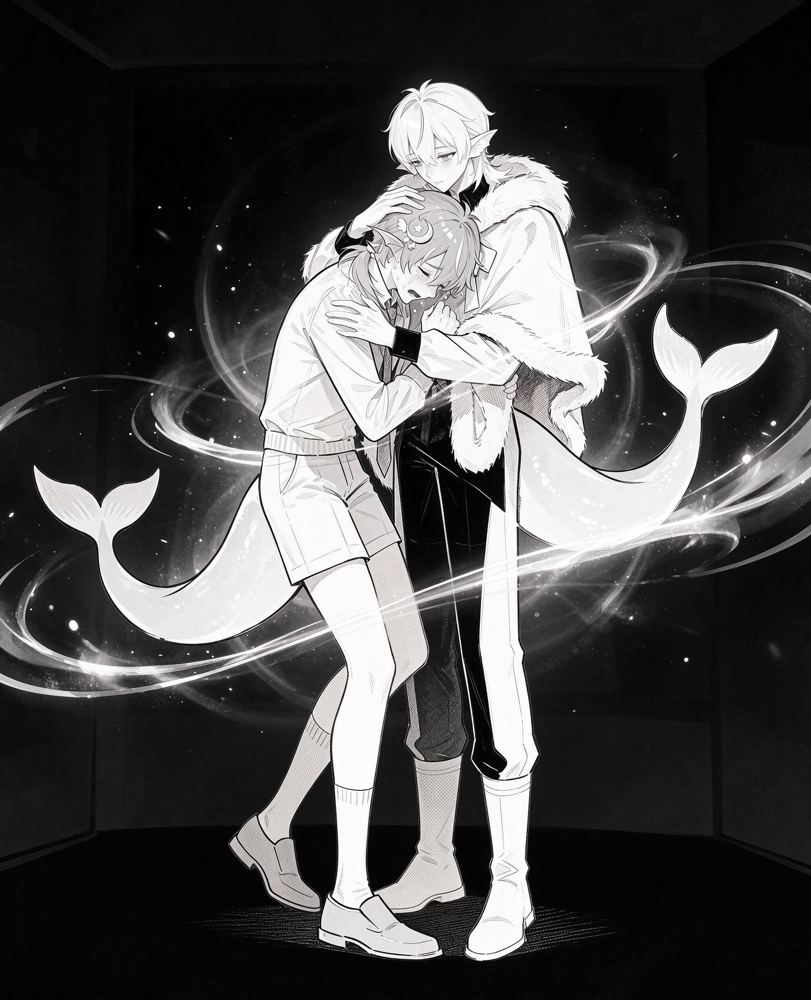

CHAPTER 01
第三卷 王冠桎梏：禁忌之途
第十章 王冠的枷锁
鎏金大殿里的光恒久不变，顺着廊柱上的纹路淌下来，铺在白玉地砖上，拉出长长的影子。
渝纪抬手，指尖蹭过额前的王冠。金属的凉意不是一瞬就散的，贴着皮肤，往骨头里渗。他试着甩头、用指尖去扣王冠边缘，又悄悄调动一点魔力往上顶。王冠稳稳地伏在他头顶，像是早就和他的头骨长在了一处，半分也挪不动。
几番尝试落空，他垂落手臂，抬眼望向王座。
“不必再费力气。” 国王的声音在大殿里散开，声音不疾不徐，“这顶圣物王冠一旦认主绑定，人是没法主动把它取下来的。”
渝纪安静站着，指尖微微蜷起。他心里那点微弱的期待，慢慢沉了下去。
“今天我和你说清楚它的能力。” 国王缓步走下玉阶，宽大的王袍擦过地面，“它可以把你的魔力固化成实体。在你能掌控的范围里，心念一动，魔力就能凝成器物、石块、建材，成型之后，你也能随意挪动、拆解、重塑它们。”
渝纪愣了愣。他之前只觉得这王冠是甩不掉的麻烦，从没想过里面藏着这样的力量。
“你还不熟悉和圣物共鸣的方式，所以力量很难稳住。静下心，试着用你的意念去牵住王冠里流转的魔力。”
渝纪依言闭上眼。魔力顺着经脉往上走，汇聚在头顶的王冠之间，一圈淡淡的暗光浮在他身侧。等他心里想着要凝出一张石台，再睁开眼时，半空里浮起一片轮廓。
没有颜色，只有深浅不一的灰与黑，边缘虚虚的，像被水浸过的旧画，看不出一点鲜活的质感。
他一次又一次试。想造木架，落下来的是灰白枯朽的架子；想造铁器，成型的东西斑驳发黑，一碰就簌簌往下掉魔力碎末。所有由他催生出来的东西，都褪尽了世间的色彩，只剩下单调的黑白。
失控是常有的事。
一次凝神施法的时候，念头晃了一下，魔力猛地冲出去。一面厚重的石墙凭空在大殿东侧成型，离两名站岗的侍卫只有一步距离。石墙落地带起一阵风，掀动侍卫的衣摆，墙体擦着他们的肩头砸在地上，地砖震得扬起一层灰尘。
渝纪心头一紧，立刻调动余下的魔力铺开一层屏障，把四散的魔力余波兜住。
没有人受伤，但殿里的气氛一下子凝住了。侍卫往后退了半步，目光落在那面还没有消散的石墙上，呼吸放得很轻。
渝纪低头看着自己还在发颤的手。他这才真切感受到，这份力量有多危险。它不受管束的时候，就是悬在所有人头顶的重物。
“你知道我为什么要寻来这顶王冠，又任由它和你绑定吗？” 国王的声音打破寂静。
渝纪抬起头，眼里带着茫然。
“其一，它能快速造出稳定的结界与实验器具，给国内的研究者提供安全的试验场地，推动我们的术法与工艺往前走。其二，边境的威胁一日不曾消弭，我们需要足够强大的力量，以备不测。我原本希望，能借王冠造就一名强者，来分担这份重担。”
国王的目光落在渝纪脸上，看得很清楚。
“只是现在看来，你还驾驭不住它。”
“我会安排你进入一处封闭秘境。那里没有外人，不会有被误伤的风险，你可以安心练习掌控力量。同时，我会陆续给你安排任务，用你的造物之力，为国内的研究、工事准备材料。”
秘境是王室专门开辟出来的空间。没有日出日落，没有四季交替，放眼望去，只有平整的石台和一成不变的灰蒙穹顶。结界在他身后合上的那一刻，外面所有的声响，全都隔在了另一边。
一开始渝纪还抱着几分兴致。
国王交代的任务很具体：打造成套的魔力测量仪器、搭建多层隔离的实验结界、批量铸造坚固的基座、雕琢实验要用的模具、编织锁住魔力外泄的屏障。每一件东西，都要求精细，容不得太大的偏差。
他沉下心，一遍一遍调整魔力的输出，修正轮廓。当做好的器物被法阵送走，送到外面的研究者手中时，他心里会生出一点淡淡的踏实。
可这份踏实，耗得很快。
秘境里没有晨昏，他分不清自己已经在这里待了多久。耳边永远安安静静，听不到风声，听不到鸟鸣，除了自己呼吸、魔力流动的轻响，再没有别的动静。日复一日，醒来就是催动魔力造物，累到极限就就地调息，恢复之后，又是新的任务。
重复的劳作磨掉了他最初的耐心。他开始盼着能有一点空闲，不用时时刻刻盯着魔力的走向，不用不断造出一堆黑白的器物。
他写了申请，通过结界递到王宫，希望可以暂缓几日任务，给自己一点喘息的时间。
传回的诏令很简短，驳回了他的请求。诏令上说，现在国内的研究正卡在关键阶段，他的力量不能停下，这般想法，属于怠惰。
渝纪盯着那一行字看了很久。
他慢慢明白，在大局面前，他的疲惫、烦闷，都算不上要紧。他在这里，只是一个用来造物的工具。

往后的日子，压力一层一层叠上来。魔力持续透支，身体长久处在酸胀乏力的状态，四下无边的安静裹着他，一点点啃噬他的心神。他常常站在石台边发呆，一站就是很久，目光落在虚空里，什么都不看。有时候魔力毫无预兆地暴走，一小块尖刺或者石块凭空冒出来，又很快碎成灰，落在他脚边。 很多时候，他会听见一些细碎的声响。像是有人在远处说话，声音忽远忽近。等他转头去看，四周依旧空空荡荡。 孤独久了，念头会往奇怪的方向走。 他一直害怕力量失控伤人。如果他造出来的不是器物，而是一个人呢？ 由他的魔力生成，由他掌控。就算出了问题，他也可以随时修补、收回。不会像那些不受控的石块，不知道什么时候会砸向旁人。 这个念头一旦冒出来，就再也压不下去。 第十一章 虚妄的躯壳 他开始试着塑造人形。魔力涌动，勾勒出四肢、躯干、面孔。一具黑白的人形立在他面前，比例完美，和真人别无二致。可它只是站着，胸腔没有起伏，眼睛没有神采，没有呼吸。 只是一具空壳。 渝纪站在它对面，看着那具不动的躯体。等魔力散去，空壳碎成满地细灰。 他试了一次又一次。无数个人形成型，又一次次崩解。地面上积起薄薄一层灰，像落了很久的霜。他的声音在空旷的殿里轻轻响起来，声音很轻：“动一动。” 没有人回应。 他慢慢摸索，慢慢试别的办法。纯粹的魔力虚影没有生机，那如果混进带着生命痕迹的东西？ 他捡来秘境里干枯的草茎、碎裂的兽骨碎屑，和魔力揉在一起塑形。 终于有一次，成型的躯体抬起了手臂。 动作僵硬，关节转动起来很滞涩，像上好弦的木偶。它能做简单的动作，却不会思考，不会回应他的话，意识淡得几乎不存在。 渝纪盯着它，心里有一阵短暂的雀跃。可很快，失落又涌上来。它能活动，却没法和他交谈，没法分担他长久的孤单。 他想，问题该是出在素材上。这些草木和骨头早就失去活性，撑不起完整的意识。 他需要鲜活的、带着生机的组织。 可他待在秘境里，与世隔绝，没有渠道拿到这类东西，王室的禁令也明确禁止这类尝试。 他抬手，指尖碰到自己的眼尾。 他的眼睛还温热，血液在里面流动，是最好的素材。 殿里静得可怕。渝纪垂着头，看着石面上自己的倒影。他安静地站了很久，然后指尖用力。 一声极轻的声响，消散在寂静里。温热的血顺着指缝滴下来，落在灰白的石面上，晕开小小的红点。 疼意顺着神经漫上来，他身子微微晃了一下，冷汗浸透衣衫。但他没有停下，小心托住掌心那枚还带着温度的眼球。 他打算以自己为模样，造出一个和他相像的存在。
王冠亮起暗光，魔力在他身侧盘旋，裹住那一点血肉，一点点搭建骨骼、皮肉、发丝。渝纪只用一只眼睛视物，视线蒙着一层血色，他稳稳盯着成型的躯体，一刻也不肯移开。 等到最后一缕魔力落定，那道身影缓缓抬起头。 胸腔微微起伏，目光落在他身上，带着一点初生的茫然。 渝纪屏住了呼吸。 对方眨了眨眼，开口，声音清浅。 那一刻，长久积压在心底的所有东西一下子翻涌上来。渝纪笑出声，笑声越来越大，肩膀不住发抖，他上前一步，把对方紧紧抱在怀里。 “你活了。” 他埋在对方肩头，声音发哑，“终于有人在这里陪着我了。” 怀里的人身子一僵。他刚刚诞生，还不明白前因后果，只看见渝纪半边脸上沾着血，一侧眼窝是空的，听见他带着颤音的笑。 但是渝纪全然不顾这些，毕竟他可太高兴了，他长久以来积蓄的负面情绪终于有了发泄的出口，他向他说起王冠，秘境，源源不断的任务，自己在这里日复一日，夜复一夜的孤独与煎熬…… 此时的渝纪眼中满是泪水，完全忘了眼前这个人才刚刚被制造出来，全然不顾眼前的这个人能不能听懂他在说什么，如同一个小孩在诉苦一般。 然而这个新生的造物却也并不排斥他这样失智的行为，还用手抚摸他头，好像真的是在安慰小孩一样。
终于，等情绪平复，渝纪才慢慢松开手，望着对方，意识到自己刚刚的行为有多么的不合理，可当他望向他的眼睛的时候，对方的掩体似乎装着跟他一样的记忆一般 而他刚刚诉说的那些痛苦，他全都能明白。 “我知道。”他说，“今后我陪着你。” 渝纪愣了一下，心里空着那块，好像被填上了一点。 在片刻的沉默之后，对方的视野落到了他凹陷下去的眼窝，用颤颤的语气说到:“也许你可以再造一个补上。” 渝纪点点头，催动魔力。魔力凝成眼球，嵌进眼眶。可魔力造出来的东西到底不一样，它并不能恢复渝纪的视力，瞳孔也是黑白的，没有他原本金色眼眸的透亮。 “我该叫什么？” 听到这个问题，他怔住了。 渝纪他并不擅长起名字，比起名字，他其实更喜欢编号这种有效率的东西。所以他此时也并没有多想，随口说了一个编号“0” 对方轻轻的摇了摇头，看了看渝纪，说到:“你身上有很多关于海洋的特征啊，加个氵，叫我‘澪’怎么样？” 渝纪低声念了一遍这个名字，没有反对。 “好了，现在你情绪稳定了一些吧？不妨再好好把自己心里的那些痛苦说出来吧，心里肯定会好受些。” 听了这话，渝纪他的心安定了一些，把藏了很久的话慢慢的说了出来，说重复的任务有多磨人，说待在这片封闭空间里有多难熬，说每次力量失控的时候，心底压着的恐惧。 澪安安静静听着，不打断他。他的目光时不时落在渝纪苍白的脸上，落在那只灰色的眼睛上，目光里藏着一点顾虑，只是一直没有说出口。他会轻声接话，安抚渝纪，可每一次看向渝纪的时候，眉头都会极轻地收拢一点，很快又松开。 之后他们一起处理当天剩下的任务。渝纪催动魔力造物，澪站在一旁，偶尔搭把手，和他说几句话。空旷的大殿里，终于有了来回的交谈声。 说实在的，他们的对话并不多，一是情况如此特殊的他们无从聊起，二是任务的过程也确实非常的索然无味，但即使是是只言片语，也似乎能把周遭寂静的寒意给驱散。 澪的话总是很温和，却留着分寸，他一直在留意渝纪魔力起伏的节奏，留意他疲惫的神色。 到一天的任务做完了，渝纪正想像往常一样收起自己的能力的时候，他犹豫了。 他望向了澪。 他并不知道，假如他这个时候收起自己的能力，澪会怎么样。 他不敢想。 但是澪只是释然的一笑，让他做他该做的事 渝纪动了动心念，澪的身体化作细碎光点，顺着魔力流回到王冠之中，像他造出来的别的物件一样，化为了他的魔力，无影无踪。 秘境又变回原来的样子，安静得只剩渝纪一个人。 第十二章 暗下的监视 但变化已经留下了痕迹。 他一金一灰的双眼，在王室监测法阵里格外显眼。值守的魔法师最先捕捉到异常：渝纪的魔力曲线乱了，还有另一股同源的、属于活物的能量，在秘境里出现过。 消息很快递到国王面前。官员调取了秘境全程的魔力记录，一条条核对。大量超出任务需求的魔力消耗、人形造物反复崩塌的痕迹、血肉融合的能量印记，全部被翻了出来。 朝堂上一片哗然。 私造生灵，是很重的禁忌。国王看着记录，心头怒火翻涌。可下面的人都清楚，渝纪的状态已经很差，长久的重压之下，他的精神早已经撑到了边界。更关键的是，王冠和他魂魄绑定，没有人能替代他。 国王压下怒火，降下旨意：准许渝纪暂停所有任务，静养休息。 明面上是体恤。暗地里，一道道看不见的监视法阵和眼线，悄悄布在了秘境四周，时时刻刻盯着里面的魔力波动。 夜色漫进秘境，穹顶的光暗下去。 四下里没有别的动静。渝纪独自站在石殿中央，掌心轻轻动了动。 王冠浮起微弱的光。细碎的光点从虚空里慢慢聚拢，一点点勾勒出熟悉的轮廓。 暗影之中，澪的身影，缓缓成型。↑